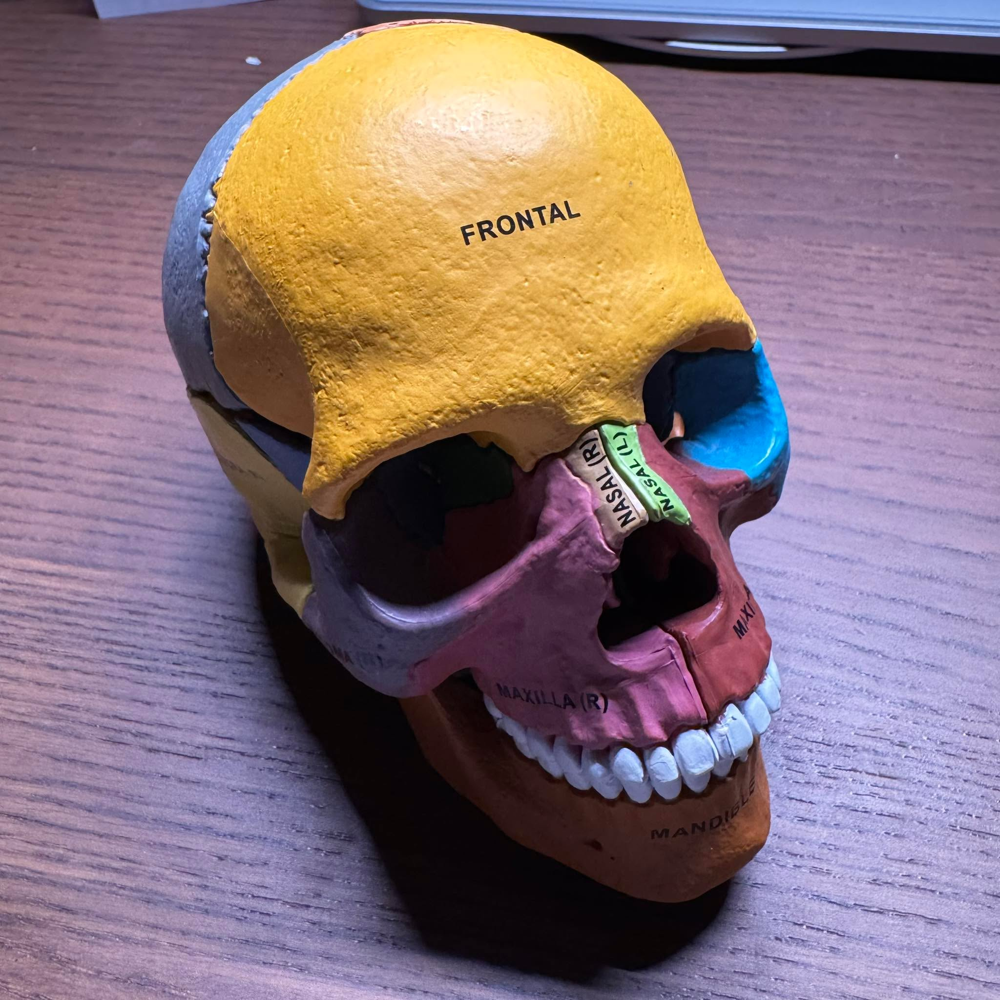

技術類專業能力的共同底層邏輯：個體內一致性（Intra-rater reliab…
【 技術類專業能力的共同底層邏輯：個體內一致性（Intra-rater reliability） 】
今天參加了顱骨骨病學（Cranial Osteopathy）的工作坊。對於習慣處理肌肉骨骼系統的治療者來說，即便平時已經習慣使用輕柔的徒手操作，但面對顱骨這個更精細的領域，依舊像踏入了一個截然不同的微觀世界。
調顱骨的手法極度精微，力道之輕巧，需要極高的專注力與觸覺敏銳度。課堂上，老師在講解「顱薦律動（Craniosacral Rhythm）」的週期時間時，很客觀地列出了各個學派與操作者間不盡相同的說法。面對這種高度仰賴主觀手感的領域，學習者該怎麼辦？
老師提出了一個非常核心的測量學觀點：
「在討論個體間一致性（Inter-rater reliability）之前，請先建立個體內一致性（Intra-rater reliability）。」
這句話引起了我極大的共鳴。建立「個體內一致性」，正是所有技術操作者跨出精準治療的關鍵第一步。
📏 先求「個內一致性」：打造精準的內在量尺
無論是感受顱骨的微小開合、操作手法的角度與力道，還是在操作針刺、乾針等技術，學習初期都高度仰賴操作者的主觀感知。
如果每一次的檢查或出手都無法維持穩定——面對同一個患者、同一個狀態，自己每次感受到的張力、力道、角度——這代表自身的「容錯率」還有待收斂。當自己的感知標尺還模糊不清時，若急著去爭論誰摸到的頻率才對，或是急於與其他醫師對標（追求評估者間一致性），往往難以建立具備建設性的客觀共識。
🔄 降低容錯率，是技術科學化的開端
一門技術要從「經驗醫學」邁向「實證科學」，關鍵之一在於排除雜訊。
穩定輸出： 治療者必須先誠實面對自己，透過大量且專注的刻意練習，確保每一次的觸診、施力與感知，都能維持高度的一致與穩定性。
差異最小化： 當個人的精準度提高、操作誤差降到最低後，我們才具備足夠的客觀條件，去和其他受過相同訓練的醫療人員進行比對，進而將不同個體間的判斷差異最小化。
👨⚕️ 跨越中西醫界線的共同語言
成熟的醫療技術，不應只停留在難以言傳的個人體會，而是能夠建立在嚴謹訓練下的可複製性（Reproducibility）與再現性（Repeatability）。
從西方的顱骨骨病學到東方的傳統醫學，底層的科學邏輯其實是相通的。唯有踏踏實實地建立起「個內一致性」，我們才能讓這些珍貴的醫療技術，在理性的基礎上被驗證、被傳承，進而為患者帶來最穩定、可靠的治療品質。
#顱骨骨病學 #Day1心得 #intraraterreliability
中醫師 黃彥鈞
